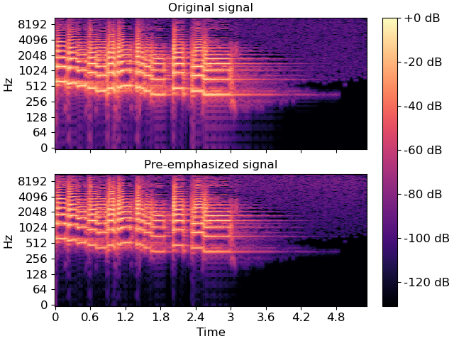

librosa.effects.preemphasis¶
- librosa.effects.preemphasis(y, *, coef=0.97, zi=None, return_zf=False)[source]¶
Pre-emphasize an audio signal with a first-order auto-regressive filter:
y[n] -> y[n] - coef * y[n-1]
- Parameters
- ynp.ndarray [shape=(…, n)]
Audio signal. Multi-channel is supported.
- coefpositive number
Pre-emphasis coefficient. Typical values of
coefare between 0 and 1.At the limit
coef=0, the signal is unchanged.At
coef=1, the result is the first-order difference of the signal.The default (0.97) matches the pre-emphasis filter used in the HTK implementation of MFCCs 1.
- zinumber
Initial filter state. When making successive calls to non-overlapping frames, this can be set to the
zfreturned from the previous call. (See example below.)By default
ziis initialized as2*y[0] - y[1].- return_zfboolean
If
True, return the final filter state. IfFalse, only return the pre-emphasized signal.
- Returns
- y_outnp.ndarray
pre-emphasized signal
- zfnumber
if
return_zf=True, the final filter state is also returned
See also
Examples
Apply a standard pre-emphasis filter
>>> import matplotlib.pyplot as plt >>> y, sr = librosa.load(librosa.ex('trumpet')) >>> y_filt = librosa.effects.preemphasis(y) >>> # and plot the results for comparison >>> S_orig = librosa.amplitude_to_db(np.abs(librosa.stft(y)), ref=np.max, top_db=None) >>> S_preemph = librosa.amplitude_to_db(np.abs(librosa.stft(y_filt)), ref=np.max, top_db=None) >>> fig, ax = plt.subplots(nrows=2, sharex=True, sharey=True) >>> librosa.display.specshow(S_orig, y_axis='log', x_axis='time', ax=ax[0]) >>> ax[0].set(title='Original signal') >>> ax[0].label_outer() >>> img = librosa.display.specshow(S_preemph, y_axis='log', x_axis='time', ax=ax[1]) >>> ax[1].set(title='Pre-emphasized signal') >>> fig.colorbar(img, ax=ax, format="%+2.f dB")
Apply pre-emphasis in pieces for block streaming. Note that the second block initializes
ziwith the final statezfreturned by the first call.>>> y_filt_1, zf = librosa.effects.preemphasis(y[:1000], return_zf=True) >>> y_filt_2, zf = librosa.effects.preemphasis(y[1000:], zi=zf, return_zf=True) >>> np.allclose(y_filt, np.concatenate([y_filt_1, y_filt_2])) True
